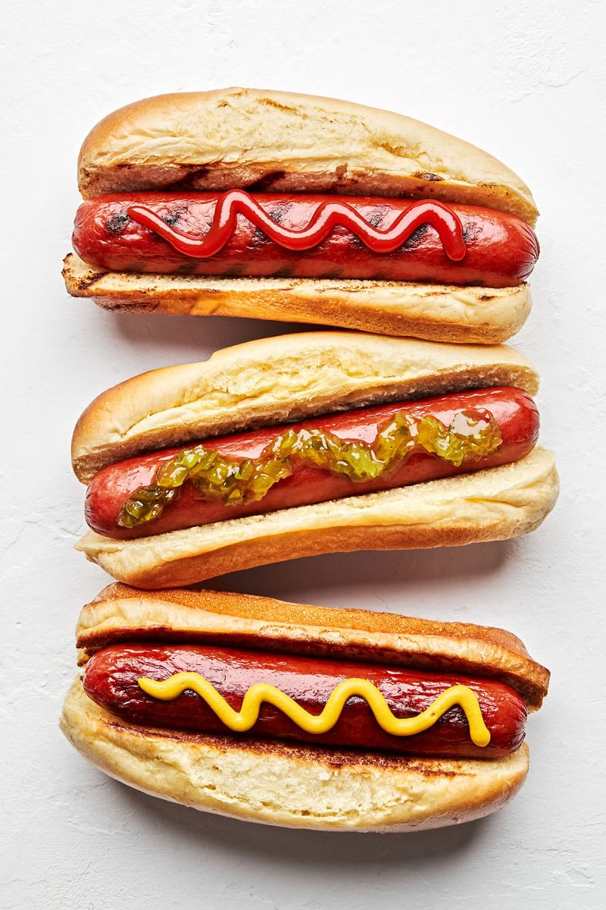

Hot dog

Description
This tasty dish originated in America and
is an absolute classic. Its very quick
and easy to make, and can be scaled up or
down dependingon the size of your party
Ingrediants
- sausage
- hot dog roll
- favourite salad
- favourite dressing/s - usually mustard and/or ketchup
Steps
- Heat a medium frying pan with a small amount of oil. Fry sausage for 10mins or untill cooked all the way through
- Turn the sausage/s occasionally, making sure they're cooked on both sides
- Prepare salad and any condiments to accompany the dish